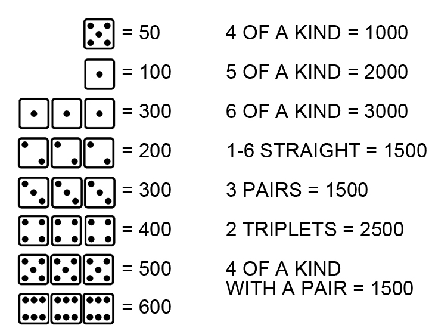
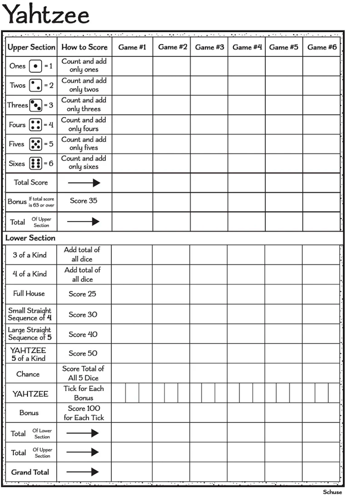

PlayCrate Games Page
Farkle
1. Players take turns rolling six dice, trying to earn points by making specific combinations.
2. Scoring dice include: single 1s (100 points), single 5s (50 points), three of a kind (e.g., three 2s = 200), three 1s (1,000), three pairs (750), and a straight from 1–6 (1,000).
3. After each roll, players must keep at least one scoring die.
4. They can either bank their points and end their turn or risk rolling again to try earning more.
5. If no scoring dice appear in a roll, it's a “Farkle”—you lose all points for that turn.
6. Using all six dice to score gives a “hot dice” bonus—you get to roll all six again.
7. Three consecutive Farkles costs 1,000 points.
8. Play continues around the table until someone scores 10,000+ points.
9. Then each other player gets one last chance to beat that score.
10. Highest score after the final round wins!

Yahtzee
Yahtzee is a classic dice game where players roll five dice to make specific combinations and score points.
1. Each turn, a player may roll the dice up to three times, choosing which dice to keep and which to re-roll.
2. After rolling, the player picks one of 13 score categories, each used only once per game. The upper section includes totals of 1s through 6s—score 63+ there and earn a 35-point bonus. The lower section features combos like three/four of a kind, full house (2+3 match), small and large straights, Chance (any total), and Yahtzee (five of a kind, worth 50 points). Extra Yahtzees earn 100-point bonuses if the first was scored.
3. After all 13 categories are filled, players total their scores. The player with the highest score wins. It’s a mix of luck, strategy, and knowing when to take risks or play it safe.

Liar's Dice
1. Each player gets 5 dice and a cup to keep their roll hidden.
2. Everyone rolls their dice secretly and peeks at their own results.
3. The first player makes a bid (e.g., “three 4s”) guessing how many dice of a certain face are on the table.
4. Bids must increase in quantity, face value, or both.
5. Players take turns either raising the bid or challenging the previous bid by saying “Liar!”
6. If challenged, all dice are revealed.
7. If the bid is correct, the challenger loses a die; if incorrect, the bidder loses a die.
8. Ones are wild unless the first bid includes 1s—then they count only as 1s.
9. The player who lost a die starts the next round.
10. The last player with dice remaining wins!
Tens Card Game
One deck feeds 2 players, add decks to expand the number of players
1. Draw 19 cards, all facedown
2. place 4 cards played facedown
3. place 4 cards played face up on top of the face down cards
4. keep the remaining 11 in your hand to play with face up.
5. Goal is to get rid of all your cards. Play cards starting with King high, Ace low and next player has to play lower. Can play multiple cards at once (example, if you have 3-9’s, you can play all 3 versus a 10 showing)
6. If 4 cards are played of the same denomination, even by multiple players in order, it “clears” the discard pile. A “10” is wild, then you can clear at any time.
7. If you cannot play, or you play a card blindly that is higher than what is on the discard pile, you have to pick up all cards in the middle.
8. You can play cards in your hand or cards face up.
9. Cards that are face down can be played after they are uncovered, but you cannot know what they are.
10. If you go out, you win — all others count cards in their hand for points. 10’s are worth 20, face cards worth 10, everything else worth points.
Kings Corner
Kings Corner is a multiplayer card game played with a standard 52-card deck (no jokers), where the goal is to be the first to discard all your cards.
1. Each player is dealt 7 cards, and four cards are placed face-up around the stockpile to form a cross-shaped layout of foundation piles.
2. Players take turns drawing one card from the stockpile and making as many valid moves as possible.
3. Cards are played in descending order and alternating colors (e.g., red 9 followed by black 8).
4. Kings are special—they can be placed in the corner spaces to start new piles.
5. Players can also move entire piles if the sequence rules are met.
6. Aces are always low and cannot be built upon.
7. Empty foundation spaces can be filled with any valid card or sequence.
8. The game continues clockwise until one player empties their hand and wins.
Trash
1. Each player gets 10 face-down cards in two rows of five; the goal is to fill spots Ace (1) through 10 with matching cards.
2. Players draw from the stock or discard pile and place cards in their correct numbered positions.
3. When placing a card, the face-down card it replaces is revealed and placed if possible—this chain continues until an unplayable card is drawn.
4. Unplayable cards (Queen, King, or duplicates) are discarded, ending the turn.
5. Jacks are wild and can be placed anywhere; they can also be displaced and reused.
6. Turns rotate clockwise, and play continues until someone completes all 10 positions.
7. That player wins the round and gets one fewer card in the next (e.g., 9 cards).
8. The game continues with each round reducing the winner’s layout by one card.
9. The first player to win a round with only one card (Ace or Jack) wins the game.
10. If the stockpile runs out, reshuffle the discard pile (minus the top card) to continue.
Golf — Card Game Instructions
The Deal:
- Each player is dealt nine cards face down and arranges them in three rows of three.
- The top card from the remaining deck is turned face up to begin a discard pile beside the stockpile.
- Players flip two of their nine cards face up; the rest remain face down and hidden.
The Play:
- Players take turns (starting with the person to the dealer’s left) drawing one card from the stockpile or discard pile.
- The drawn card may be swapped with one of the player’s nine cards or discarded.
- If the swap replaces a face-down card, the new card remains face up.
- A Ripple can occur when:
- A newly revealed card matches the value of another face-up card in a row or column.
- This triggers a chain reaction, allowing the revealed card to be moved elsewhere to form another match.
- Matching cards in a row or column score zero points, reducing the player’s total score.
- The round ends when all nine cards of one player are face-up.
Scoring:
Card | Points
-----|--------
Ace | 1 point
2 | –2 points
3–10 | Face value
Jack | 10 points
Queen| 10 points
King | 0 points
Sets | 0 points (even three 2s!)